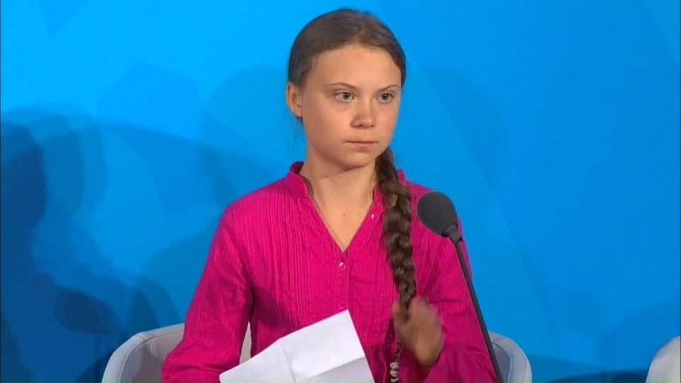

肯定很多人都在这么说：对比一下各国的年轻人，瑞典高中生讲气候变化的声音讲给全世界，弗罗里达的高中生发出呼吁枪支管制的声音，与我们一墙之隔的某地的中学生不断用自己的力量抗争。再看看大陆的高中生，超话王者荣耀之余的时间都帝吧出征了吧。
@联合国:
16岁的瑞典“气候女孩”格雷塔•通贝里无疑是参加2019年#联合国大会# 的各界名人中最夺人眼球的一个。这位被诊断患有阿斯伯格综合症、强迫症和选择性缄默症的弱小女孩因为发起“为了环境，罢课”运动而名声大噪，更被提名为2019年诺贝尔和平奖候选人……很多人将格雷塔归类为 网红 ，撇开恶意的人身攻击，围绕这个女孩的诸多争议其实都指向了一个问题：忧心气候变化以及人类的可持续发展没有错，但孩子究竟该为此扮演怎样的角色？批评者认为，像通贝里这样年纪的孩子，“政治活动家和激进环保分子”这样的标签可不是什么褒奖，孩子的正经任务就该是好好上学。在纽约联合国总部举行的#气候行动峰会# 上，格雷塔发表了一段充满激情的、让各国领导人汗颜的演讲。她满含热泪的向各国高级代表指出：你们怎敢这样？如果各位真的了解气候变化实情但却仍然不采取行动，那么你就是邪恶的！你们怎敢这样？用空话偷走了我的梦想和童年。所有后代的目光都在注视着你们，如果你们选择让我们失望，我们将永远不会原谅你们。
网红 ，撇开恶意的人身攻击，围绕这个女孩的诸多争议其实都指向了一个问题：忧心气候变化以及人类的可持续发展没有错，但孩子究竟该为此扮演怎样的角色？批评者认为，像通贝里这样年纪的孩子，“政治活动家和激进环保分子”这样的标签可不是什么褒奖，孩子的正经任务就该是好好上学。在纽约联合国总部举行的#气候行动峰会# 上，格雷塔发表了一段充满激情的、让各国领导人汗颜的演讲。她满含热泪的向各国高级代表指出：你们怎敢这样？如果各位真的了解气候变化实情但却仍然不采取行动，那么你就是邪恶的！你们怎敢这样？用空话偷走了我的梦想和童年。所有后代的目光都在注视着你们，如果你们选择让我们失望，我们将永远不会原谅你们。 网页链接
网页链接  联合国的微博视频
联合国的微博视频

72万次播放
04:09